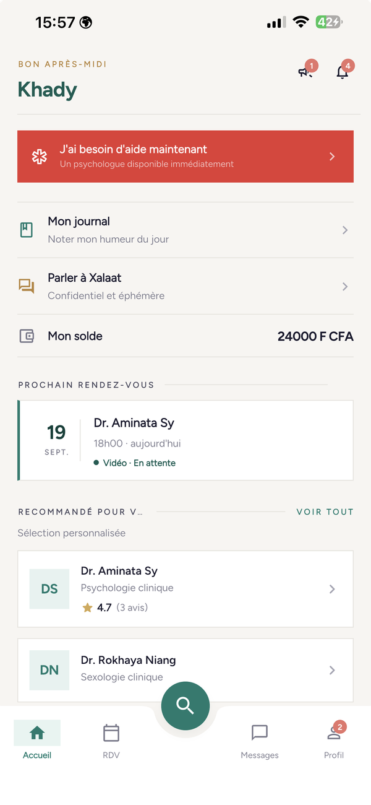

Des psychologues vérifiés
Chaque psychologue dépose son diplôme. Un administrateur le contrôle avant que le profil soit visible. Un compte refusé n'apparaît pas dans la recherche.
PsyConnect met en relation les Sénégalais avec des psychologues dont le diplôme a été vérifié. Consultation en vidéo, en audio ou au cabinet, que vous soyez à Dakar, à Ziguinchor ou à Matam.
Trois tests d'auto-évaluation, anonymes. Vos réponses restent dans votre navigateur.

L'accueil patient de l'application, capture réelle.
psychiatres recensés pour l'ensemble du pays en 2020.
régions sans aucun service de psychiatrie : Diourbel, Kaffrine, Matam, Kédougou, Kolda, Sédhiou.
de la population présente un trouble mental, selon l'enquête nationale de 2023.
Source : Plan stratégique Santé Mentale Sénégal 2024–2028, Ministère de la Santé et de l'Action sociale.
Prendre rendez-vous, c'est le début. L'application sert aussi à rester en lien entre deux séances.
Chaque psychologue dépose son diplôme. Un administrateur le contrôle avant que le profil soit visible. Un compte refusé n'apparaît pas dans la recherche.
Vous choisissez comment consulter. Un rendez-vous se reporte ou s'annule depuis l'application, avec remboursement si vous annulez plus de 48 heures avant.
Savoir à quoi s'attendre, trouver ses mots, se rassurer avant le rendez-vous. Aucune conversation n'est conservée. Si un message évoque une détresse, Xalaat affiche les numéros d'urgence.
On y note son humeur et ce qui s'est passé dans la journée. Il reste privé : vous décidez si vous le partagez en séance.
Inutile d'attendre le prochain rendez-vous : vous écrivez à votre psychologue dans un fil rattaché à votre suivi.
On alimente son solde par Orange Money, Wave ou carte. La séance se règle depuis ce solde, et un remboursement y revient automatiquement.
Ces échelles sont utilisées en consultation et en recherche dans le monde entier. Elles ne posent pas de diagnostic : elles donnent un repère et des mots pour en parler. Vos réponses restent dans votre navigateur.
Un profil de psychologue n'est visible qu'une fois son diplôme validé par l'administration.
En mode anonyme, le psychologue voit un pseudonyme. Vous décidez si et quand vous révélez votre identité.
Le serveur ne stocke aucune conversation et l'échange disparaît quand vous quittez la discussion. Le modèle tourne sur l'infrastructure du projet, sans service d'IA tiers, et ne s'entraîne pas sur vos messages.
Les questionnaires de ce site s'exécutent dans votre navigateur. Aucune réponse, aucun score, aucun identifiant n'est transmis.
PsyConnect n'est pas un service d'urgence. Si vous ou un proche êtes en danger immédiat, ou si vous pensez à vous faire du mal, appelez maintenant, de jour comme de nuit.